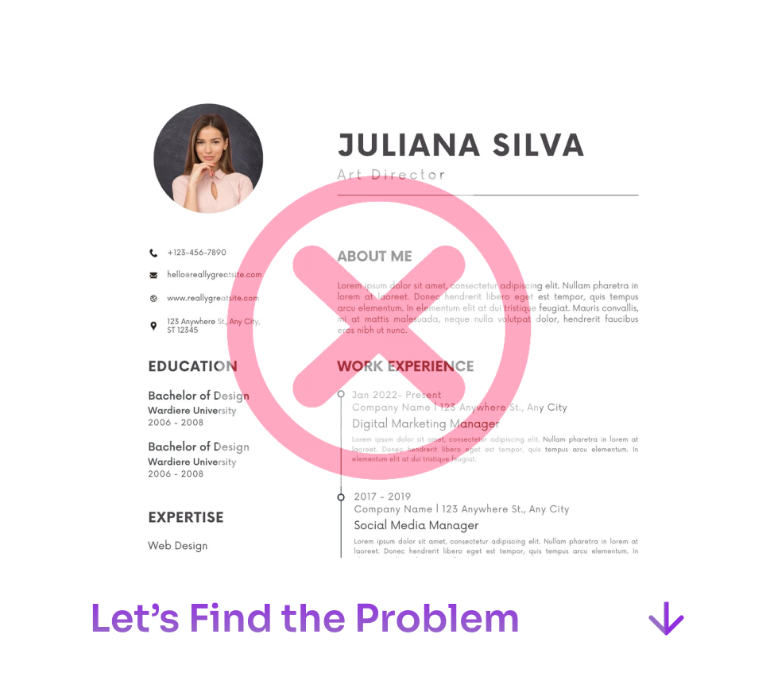

Contact Us
Not getting interviews with
Your Resume?

Upload Your Resume
Choose File
No file chosen
Analyze Now
Need Help improving Your Resume?
Get personalized assistance from our expert resume builders via WhatsApp!
Contact Us on WhatsApp
Why Your Job Search Is Failing
The Painful Truth:
✕
75% of resumes are rejected by ATS before human eyes
✕
Hiring managers spend just 7.4 seconds per resume
✕
98% of job seekers are eliminated at the initial resume screening
The JobSocial Advantage:
✓
AI-powered resume optimization beats ATS every time
✓
Direct access to hiring managers, skipping the line
✓
Personalized job matches delivered to your inbox daily